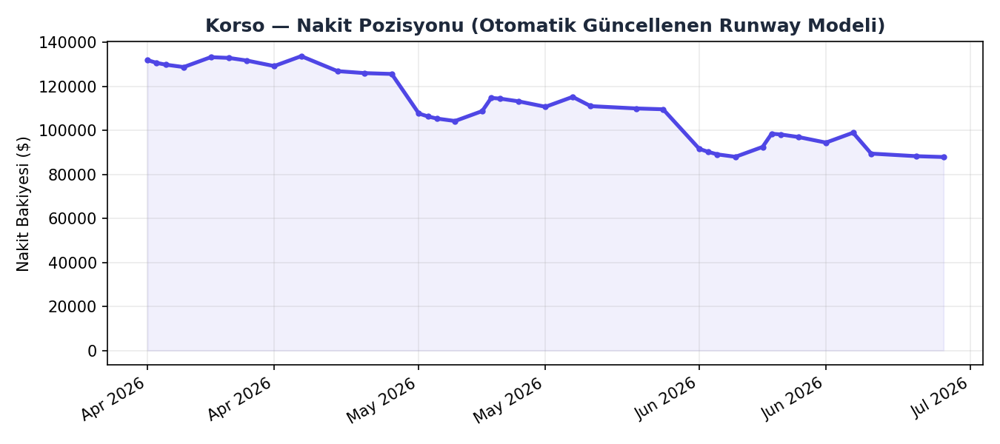

Madde 10'da tasarlanan otomasyon planının çalışan prototipi · Case Study Bonus
$87,940
$20,687
4.3 ay

Yeni tedarikçi + yüksek tutar kombinasyonu otomatik geçmez — Madde 8.2'deki Dual-Guardrail mantığının finansal versiyonu.
| Tarih | Tedarikçi | Açıklama | Tutar |
|---|---|---|---|
| 2026-04-22 | Unicorn Data Services LLC | New vendor - large one-off charge | $-6,800 |
| 2026-05-20 | TalentForge Recruiting | Recruiting fee - new vendor | $-4,200 |
| 2026-06-20 | Quantum Compute Labs | Unusual large transfer - new vendor | $-9,500 |
| Kategori | Toplam |
|---|---|
| Personel Maaşları | $-54,000 |
| Hukuk | $-7,500 |
| LLM API Maliyeti | $-6,060 |
| İşe Alım | $-4,200 |
| Bulut Altyapısı | $-3,940 |
| Muhasebe (Otomatikleştirilen Rol) | $-3,600 |
| Ofis/Coworking | $-3,300 |
| Sigorta | $-1,140 |
| SaaS Araçları | $-1,020 |
| Diğer / Kategorize Edilemedi | $22,700 |
Bu rapor otomatik olarak üretilmiştir — cashflow_agent.py · Korso Case Study PoC